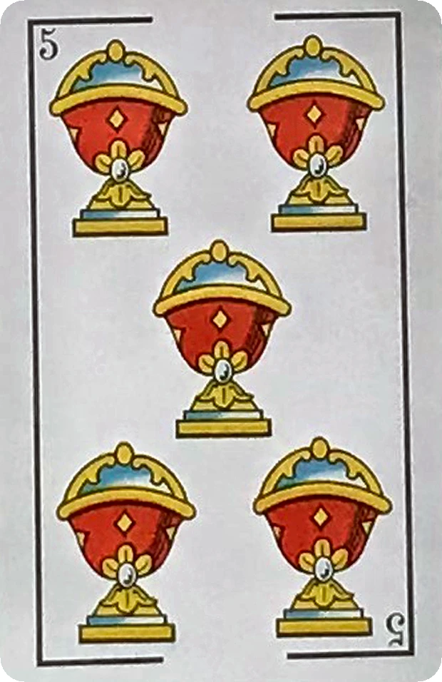
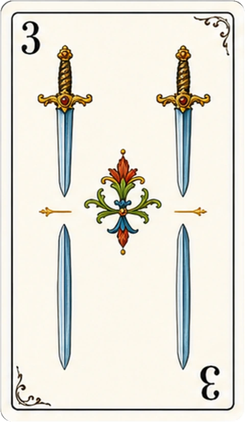

SUMA QUINCE · CAPTURA · BARRE LA MESAEscoba,
Escoba,
partidas rápidas y precisas.
Juega una carta, encuentra la combinación que suma quince y limpia la mesa para hacer escoba. La IA busca capturas valiosas y el modo local admite hasta cuatro personas.



15